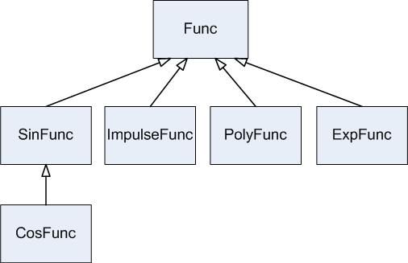

Lab 9: Inheritance
Download
- derive.cpp demonstrates class inheritance
- order.cpp demonstrates the order in which base class objects and derived class objects are constructed and destructed
- sub.cpp demonstrates the substitution principle
Class Inheritance
Inheritance makes software reuse possible. Rather than re-implementing common characteristics, a class inherits data members and member functions from its parent class.
Class derivation
In C++, inheritance is supported through a mechanism referred to as class derivation. The class that is inherited is called the base class and the new class is called the derived class. To derive a new class from a base class, we define the derived class as follows:
class B {
// member functions and data members, etc.
// ...
} ;
class D: public B {
// member functions and data members, etc.
// ...
} ;
Then B is a base class and D is a derived class of B.
Furthermore, if we have
class DD : public D {
// ...
} ;
then DD is a (direct) derived class of D and an indirect derived class of B.
Access Control
The access specifier public may be replaced by protected or private. It specifies how the derived class inherits from its base class. We will come back to this later.
Let us first look at an example: derive.cpp
Member accessibility
- Public members can be accessed by any functions.
- Private members can be accessed only by the member functions of the current class (and their friends).
- Protected members are similar to private members with the only difference occurred under inheritance. Not only can protected members be accessed by member functions of the current class, but they can also be accessed by member functions of its derived classes.
In the above example, width and height are protected members of Polygon. They cannot be accessed by the main function. They can, however, be accessed by the member functions of its derived classes (e.g., Rectangle and Triangle).
Note: the constructors and destructor of the base class cannot be inherited to the derived class.
Construction and Destruction
Although constructors cannot be inherited, a constructor of the derived class can call a constructor of its base class in the member initialization list.
derived_class_constructor(parameters) : base_class_constructor(parameters) {
// ...
} ;
The order of calling the constructors when an object of the derived class is created:
- base class constructor
- data member constructors (in the order specified in the class definition)
- derived class constructor
The order of calling the destructors is the reverse of that of calling the constructors. Let us look at an example: order.cpp
Substitution Principle
In class derivation, all non-private members of the base class are inherited and they can be accessed directly in the derived class. We say that every object of the derived class is an object of its base class. Wherever an object of the base class is used, an object of the derived class may also be used instead.
Here is an example: sub.cpp
Lab Task
In func.zip, you are provided a partially implemented inheritance hierarchy shown below:

- We have a base class Func. SinFunc, PolyFunc and ImpulseFunc are inherited from Func to allow software reuse.
- CosFunc is inherited from SinFunc (for obvious reason that cosine is a sine function with a phase shift). We define CosFunc as follows.
- Value: cosθ = sin(90°-θ) ;
- Derivative: cos'θ = [sin(90°-θ)]' = (90°-θ)'sin'(90°-θ) = -sin'(90°-θ)
Note: the implementation of class CosFunc is restricted to the functions of its parent (i.e., SinFunc) instead of the library cmath.
- Each "function" evaluates its value and derivative at value x.
- In main.cpp, there are five overloaded functions PrintFunc. They are almost identical except the second parameter.
- In the Func implementation, Func::IsDifferentiable(double) returns true if the function is differentiable within the range.
- The sine and cosine are periodic; the polynomial and impulse functions are NOT periodic.
- The sine, cosine, and polynomial functions are differentiable; the impulse function is differentiable except at the impulse.
Your task for the lab assignment is to do the following:
- In tri_func.h and tri_func.cpp, complete the class CosFunc. You may refer to SinFunc to get some ideas (a useful reference link).
- In poly_func.cpp, implement PolyFunc::DerivativeAt(double x) in order to calculate the derivative of that polynomial function at x. You may read PolyFunc::EvaluateAt(double) too (a useful reference link).
- In impluse_func.cpp, complete ImpulseFunc::EvaluateAt(double).
- In impluse_func.h and impluse_func.cpp, override ImpulseFunc::IsDifferentiable(double).
Note: To test the equality of two float/double-type variables, you CANNOT use the equality (==) operator (e.g., d1 == d2). This is because float/double-type variables have numerical precision problems. Instead, you should first get the difference between them (double diff = d1 - d2;). If the difference is within a small range (-LIMIT < diff < LIMIT), you then treat them as equal. For this purpose, you should use EQUALITY_LIMIT defined in impulse_func.cpp.
Here is the expected output if your implementation is correct:
p name = poly is periodic = false value at 2 = 49 is differentiable at 2 = true derivative at 2 = 72 ----------------------------------------------- s name = sin is periodic = true value at 0.785398 = 0.707107 is differentiable at 0.785398 = true derivative at 0.785398 = 0.707107 ----------------------------------------------- c name = sin is periodic = true value at 1.5708 = 0 is differentiable at 1.5708 = true derivative at 1.5708 = -2 ----------------------------------------------- i name = impulse is periodic = false value at 800 = 0 is differentiable at 800 = true derivative at 800 = 0 i again name = impulse is periodic = false value at 10 = 7 is differentiable at 10 = false